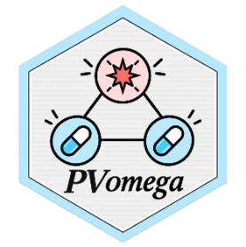

Caveats and Considerations
Source:vignettes/articles/Caveats-and-Considerations.Rmd
Caveats-and-Considerations.RmdOmega is a statistical measure intended to support hypothesis generation for potential drug-drug interactions in databases of adverse event reports. It should not be interpreted as evidence that a drug-drug-event relationship is causal (i.e., an interaction exists) or clinically relevant.
As with other disproportionality methods, results depend on the underlying data, the definition of the study population, and the choices made when constructing the analysis.
Interpretation of Omega
A positive Omega indicates that a drug-drug-event combination is reported more frequently than expected under the additive model used by the method. A potential interaction is highlighted when the lower bound of the credibility interval for Omega is above zero.
This should be regarded as a statistical signal rather than confirmation of an interaction. Signals should be evaluated together with the underlying case reports, clinical and pharmacological knowledge, and other available evidence.
The component reporting rates should also be examined when interpreting a result. In particular, an elevated reporting rate for the event with one of the drugs alone may substantially influence the expected count for the combination.
Spontaneous Reporting Data
When Omega is applied to spontaneous adverse event reporting databases, the limitations inherent to these data also apply to the analysis.
These include, among others:
- under-reporting and selective reporting;
- changes in reporting practices over time;
- stimulated reporting following regulatory or media attention;
- differences in drug utilisation and time on market;
- missing or incomplete information;
- duplicate reports;
- differences in coding and data processing.
Consequently, reporting frequencies should not be interpreted as incidence rates or measures of absolute or relative clinical risk.
Dependence on Analysis Choices
Results can be affected by decisions made when defining the analysis population and constructing the counts required by Omega.
Relevant choices may include:
- which drug roles are considered evidence of exposure;
- how duplicate reports are identified and handled;
- how drugs and adverse events are grouped or coded;
- restrictions applied to the report population;
- the database version and observation period used.
These choices should be documented when reporting an analysis and, where appropriate, explored through sensitivity analyses.
Sparse Data
Drug-drug-event combinations can involve small numbers of reports, particularly for uncommon drugs, events, or combinations.
Omega incorporates shrinkage to reduce the instability associated with small observed and expected counts. Nevertheless, sparse data can still lead to substantial uncertainty. The point estimate should therefore be considered together with its credibility interval and the underlying counts.
Drug-Drug Interaction Signals
A statistical interaction in reporting does not necessarily correspond to a pharmacological drug-drug interaction.
An observed pattern may arise from alternative explanations, including confounding by indication, underlying disease, co-medication patterns, reporting behaviour, or other characteristics of the exposed population.
Conversely, absence of an Omega signal should not be interpreted as evidence that a drug-drug interaction does not exist. Limited exposure, sparse reporting, or other characteristics of the data may prevent an interaction from being detected.
Review of Individual Cases
When possible, statistical signals should be complemented by review of the individual case reports contributing to the combination.
Case-level assessment may help determine whether the temporal relationship, reported clinical course, dechallenge or rechallenge information, doses, co-medications, and known pharmacological mechanisms support the hypothesis suggested by the statistical analysis.